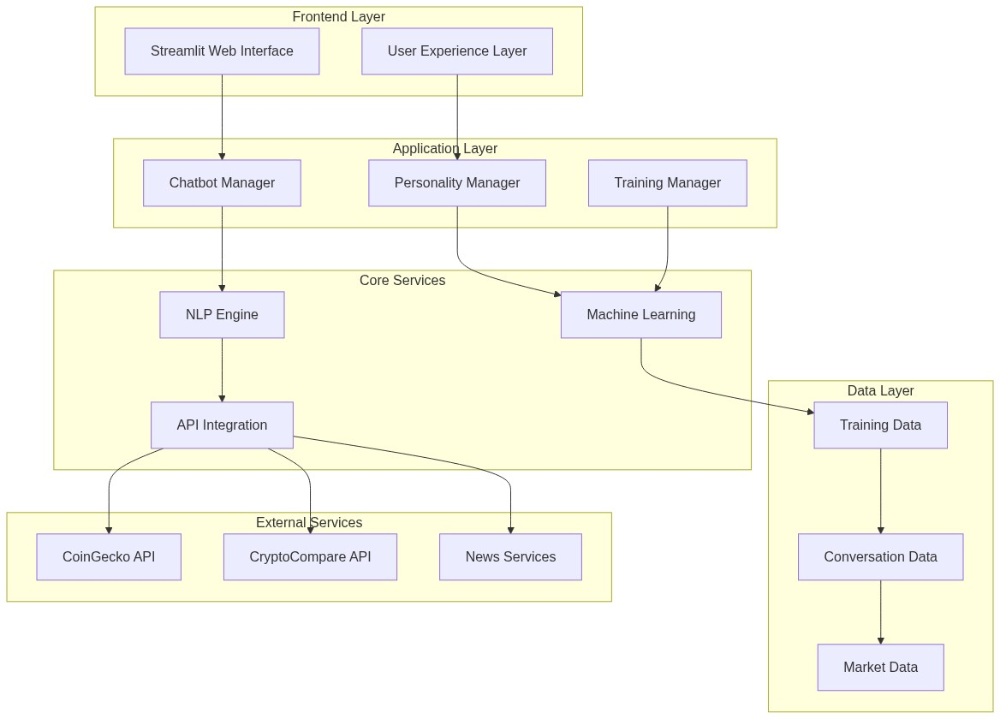

Figure 1: System Architecture Overview
This diagram illustrates the comprehensive system architecture of KoinToss, showing the modular design with distinct layers for frontend, application logic, core services, data management, and external API integration.

Image file: diagram_1_graph.png